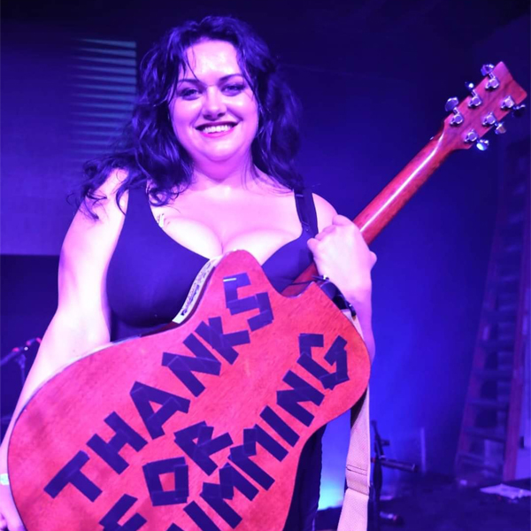
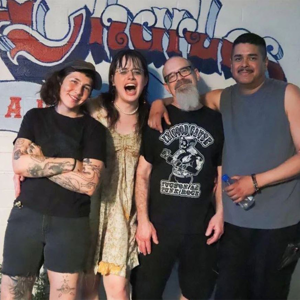

Artists
Artist One: Critical Miss
- 
-
Self-deprecating acoustic folk punk musician out of Tempe, AZ
Artist Two: Rocky Mountain Baby

-
Fuzzy Country
Artist Three: Gutter Town
- 
-
Cow Punk from Tucson, AZ
Artist Four: Jessie Williams

-
A queer folk musician currently residing in Tucson, AZ
Artist Five: These Loud Thoughts

-
Independent, gender-fluid, genre-bending folk-rock and alt-country artists hailing originally from Tucson, AZ, but now from the outskirts of metro phoenix